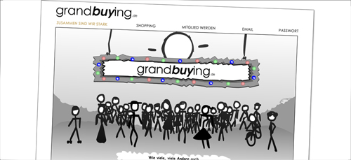

Telefonsex war gestern

Manche dinge ändern sich ja nie. Zum Beispiel der Umstand, dass man einen Batzen Geld hat, aber einfach nicht weiss, wie man den möglichst sinnentleert wieder los werden soll (z.B. wenn die Steuerfahndung anklopft). Als effektivste Möglichkeit stellte sich der Handel an den Börsen dar. Ob Tulpen in Rotterdam, oder Imobilienfonds an den internationalen Gelmärkten. Allerdings hatte die Sache einen Haken. Mit etwas Pech hatte man am Ende mehr Geld als vorher. Also was tun?
Mitte der 90er wurde endlich eine effektive Lösung für das Problem gefunden. Telefonsex-Hotlines mit Preisen um die 25 € pro Minute. Also einfach vor dem Schlafengehen 0190-xxx angerufen, Hörer danebengelegt und schon hatte man morgens 250.000 € weniger auf dem Bankkonto. Also Gefahr erkannt, Gefahr gebannt. Einige Kleingeister von den unteren vier Millionen muckten allerdings auf, und haben die Höchstpreise für solche Rufnummern stark herabgesetzt, so dass man kaum noch erreichbar war, weil ständig die Leitung durch Sexy Sandy und die geile Ute besetzt waren.
So kann es nicht weitergehen, dachten sich einige findige Web2.0 Nerds von der I-NNOVATIVE Dtl. Ltd. (Der Firmensitz ist bei Wunstorf, zumindest ist das dortige Gewerbeamt dafür zuständig) und haben grand-buying.de ins leben gerufen. Da kann man sich z.B. eine geile Wii incl. Balance Board für schlappe 211 €uronen schießen. Da denkt man natürlich: "Hä? Wie soll ich denn so meine Kohlen schneller loswerden? Beim Mediamarkt um die Ecke krieg ich das Teil ja wenigstens für 350€".
Aber jetzt kommt der Clou. Man muss da gar nichts kaufen. Bzw. man kann dort nur einen Artikel pro Monat erstehen. Und selbst wenn man einen Artikel dort bestellt, heisst das noch lange nicht, dass man Angst haben muss ihn auch zu bekommen. Dafür darf man aber pro Monat ein Jahr lang 199,-€ in den Rachen der lustigen Firma schießen, die man garantiert nie wiedersieht. Also Besser gehts doch kaum, oder?
Ach ja, die Flashanimation ist übrigens hübsch anzuschauen. Der Auftrag wurde ja auch von einem versierten Fachbetrieb durchgeführt, der sich auf myhammer.de prostituiert hat.
P.S.: Und falls jemand eine Wii für 200€ abzugeben hat, weil sie zwischen seiner xbox360 und der PS3 einfach nicht gut aussieht, findet in mir einen dankbaren Abnehmer 


- Externe Links im selben Fenster öffnen
- Externe Links in neuem Fenster öffnen